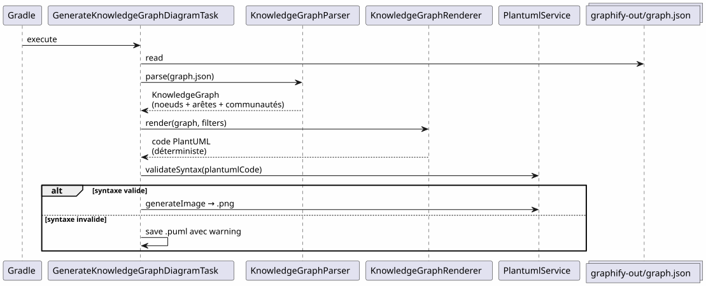
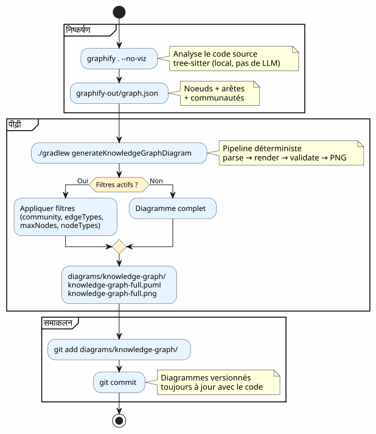
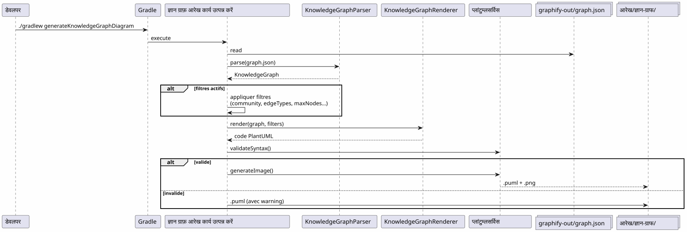

Graphify को Gradle वर्कफ़्लो में एकीकृत करें : Knowledge Graph से PlantUML आरेख तक एक ही आदेश में
Publié le 19 April 2026
- समस्या: कोड से हमेशा पीछे रहने वाले आरेख
- हल : एक निर्धारित Knowledge Graph → PlantUML
- चरण 1 : Graphify स्थापित करें और Knowledge Graph निकालें
- चरण 2 : Gradle प्लगिन Knowledge Graph को PlantUML में परिवर्तित करता है
- चरण 3: दैनिक उपयोग
- ग्रैडल वर्कफ़्लो में पूर्ण पाइपलाइन
- डॉगफ़ूडिंग : प्लगइन स्वयं दस्तावेज़ित करता है
- यह क्यों निर्धारित है (और यह क्यों मायने रखता है)
- Bake (generate) the site jbake -b
- Bake and serve locally jbake -b -s
- Bake and watch for changes jbake -b --reset
- Specify source and destination jbake source_folder output_folder
- Clear the output directory before baking jbake -b . output --reset
`
आपका कोडबेस बढ़ रहा है। मॉड्यूल के बीच की निर्भरताएँ बढ़ रही हैं। आर्किटेक्चर दस्तावेज़ लिखे जाने से पहले ही पुराना हो जाता है। और यदि आपका Gradle बिल्ड स्वचालित रूप से वास्तविक कोड संरचना से अप-टू-डेट डायग्राम उत्पन्न कर सके ? यह बिल्कुल वही है जो Graphify + PlantUML Gradle प्लगइन पाइपलाइन करता है :`graphify . --no-viz`Knowledge Graph का अंश,`./gradlew generateKnowledgeGraphDiagram`यह PlantUML डायग्राम में बदल देता है। शून्य LLM, शून्य मैनुअल, 100% निर्धारित।
- टोक
-
(No output)
समस्या: कोड से हमेशा पीछे रहने वाले आरेख
कु�ुछ हज़ार पंक्तियों से अधिक वाली हर परियोजना इस सिंड्रोम को जानती है:
-
प्रोजेक्ट के प्रारंभ में एक आर्किटेक्चर डायग्राम बनाया जाता है
-
कोड विकसित हो रहा है, निर्भरताएँ बदल रही हैं
-
आरेख एक सजावटी झूठ बन जाता है
-
कोई इसे अपडेट नहीं करता क्योंकि यह परेशान करने वाला है
-
नए आगंतुक इस पर भरोसा करते हैं और गलतियाँ करते हैं

क्या चित्र होना चाहिए ? — हर कोई जानता है कि हाँ। प्रश्न यह है :कौन उन्हें अपडेट रखता है?
जवाब: कोई नहीं. सिवाय तब जब यह स्वचालित हो।
हल : एक निर्धारित Knowledge Graph → PlantUML
सिद्धांत सरल है : हाथ से आरेख बनाने के बजाय, हम उन्हेंवास्तविक कोड संरचना से उत्पन्न.
Failed to generate image: PlantUML preprocessing failed: [From <input> (line 7) ] @startuml skinparam backgroundColor #FEFEFE skinparam componentStyle rectangle actor Développeur component "ग्राफ़िफाई\n(pip install graphifyy)" as Graphify collections "graphify-out/graph.json ^^^^^ Syntax Error? (Assumed diagram type: component) @startuml skinparam backgroundColor #FEFEFE skinparam componentStyle rectangle actor Développeur component "ग्राफ़िफाई\n(pip install graphifyy)" as Graphify collections "graphify-out/graph.json (ज्ञान ग्राफ़)" as KGJSON component "PlantUML Gradle प्लगइन (generateKnowledgeGraphDiagram)" as Plugin component "नॉलेजग्राफ़पार्सर" as Parser component "KnowledgeGraphRenderer" as Renderer component "PlantumlService (सत्यापन + PNG रेंडर)" as PS collections "आरेख/ज्ञान-ग्राफ/\n(.puml + .png)" as Output Développeur --> Graphify : graphify . --no-viz Graphify --> KGJSON : extrait la structure\ndu code source Développeur --> Plugin : ./gradlew generateKnowledgeGraphDiagram Plugin --> Parser : parse(graph.json) Parser --> Plugin : KnowledgeGraph\n(noeuds + arêtes + communautés) Plugin --> Renderer : render(graph, filters) Renderer --> Plugin : code PlantUML\ndéterministe Plugin --> PS : validateSyntax + generateImage PS --> Output : .puml + .png note bottom of Plugin Pipeline DÉTERMINISTE Aucun appel LLM Résultat reproductible end note @enduml
दो कमांड। यही सब।
# Étape 1 : extraire le Knowledge Graph
graphify . --no-viz
# Étape 2 : générer les diagrammes PlantUML
./gradlew generateKnowledgeGraphDiagramपरिणाम? फ़ाइलें`.puml` et .png`में`diagrams/knowledge-graph/, Git में संस्करणित, कोड के साथ हमेशा अद्यतन.
चरण 1 : Graphify स्थापित करें और Knowledge Graph निकालें
स्थापना
Graphify एक Python उपकरण है जो आपके कोडबेस का विश्लेषण करता है और एक संरचित ज्ञान ग्राफ़ बनाता है :
# Méthode recommandée
uv tool install graphifyy && graphify install --platform opencode
# Alternative avec pip
pip install graphifyy && graphify install --platform opencodeअपवर्जन कॉन्फ़िगर करें
एक फ़ाइल बनाएँ`.graphifyignore`परियोजना के मूल पर व्यापार तर्क का हिस्सा न होने वाले फ़ाइलों को बाहर रखने के लिए:
# Secrets — JAMAIS dans le graphe
*-context.yml
*.env
# Fichiers générés
build/
.gradle/
# Tests fonctionnels
src/functionalTest/Knowledge Graph निकालें
graphify . --no-vizझंडा`--no-viz`HTML जनरेशन को छोड़ दें (Gradle पाइपलाइन में अनावश्यक)। परिणाम एक फ़ाइल है`graphify-out/graph.json`शामिल :
-
नोड: क्लासेस, फ़ंक्शन, फ़ाइलें — उनके प्रकार और समुदाय के साथ
-
किनारोंनोड्स के बीच संबंध (EXTRACTED कोड से, INFERRED LLM द्वारा)
-
समुदाय: संबंधित नोड्स के स्वचालित समूह
graph.json{
"nodes": [
{"id": "0", "label": "LlmService", "file_type": "code", "community": 0},
{"id": "1", "label": "ApiKeyPool", "file_type": "code", "community": 0},
{"id": "2", "label": "PlantumlService", "file_type": "code", "community": 1}
],
"links": [
{"source": "1", "target": "0", "relation": "uses", "confidence": "EXTRACTED", "weight": 0.9},
{"source": "0", "target": "2", "relation": "calls", "confidence": "INFERRED", "weight": 0.7}
]
}|
स्रोत कोड ( |
चरण 2 : Gradle प्लगिन Knowledge Graph को PlantUML में परिवर्तित करता है
पाइपलाइन आर्किटेक्चर
प्लगइन`com.cheroliv.plantuml`एक कार्य शामिल करता है`generateKnowledgeGraphDiagram`जो बदलता है`graph.json`PlantUML डायग्रामों में तरीके सेपूरी तरह से निर्धारक:

आंतरिक घटक
| घटक | भूमिका |
|---|---|
|
पार्स`graph.json`— 3 प्रारूपों का समर्थन करता है : नैटिव graphify ( |
|
एक का निर्धारित रूप से रूपांतरण करें`KnowledgeGraph`कोड में PlantUML. प्रकार के अनुसार समूह, पैकेज में समुदाय, स्वचालित कथा। |
|
ग्रेडल टास्क जो पार्स → रेंडर → वैलिडेट → PNG को ऑर्केस्ट्रेट करता है। ग्रेडल प्रॉपर्टीज़ द्वारा कॉन्फ़िगर योग्य। |
|
डेटा मॉडल:`KnowledgeGraph`, |
|
सिंटैक्स मान्यता + PNG रेंडरिंग (प्लगिन के सभी कार्यों द्वारा पुनः उपयोग किया जाता है). |
रेंडरिंग के नियम
रेंडरर निर्धारित दृश्य सम्मेलनों को लागू करता है:
| किनारे का प्रकार | नोटेशन PlantUML | अर्थ |
|---|---|---|
निकाला |
|
स्रोत कोड से निकाला गया संबंध (निश्चितता) |
अनुमानित |
|
LLM द्वारा अनुमानित संबंध (विश्वास स्कोर) |
अस्पष्ट |
|
अस्पष्ट संबंध (सत्यापित करने के लिए) |
समुदायों को PlantUML पैकेज के रूप में स्वचालित रंग पैलेट के साथ प्रस्तुत किया जाता है।
चरण 3: दैनिक उपयोग
पूर्ण आरेख
# Générer le diagramme du Knowledge Graph complet
./gradlew generateKnowledgeGraphDiagramआउटपुट :`diagrams/knowledge-graph/knowledge-graph-full.puml`(output empty string as no French text was provided for translation).png
समुदाय द्वारा फ़िल्टर करें
# Une seule communauté
./gradlew generateKnowledgeGraphDiagram \
-Pplantuml.kg.community=community_0
# Limiter le nombre de noeuds (lisibilité)
./gradlew generateKnowledgeGraphDiagram \
-Pplantuml.kg.community=community_0 \
-Pplantuml.kg.maxNodes=15किनारे के प्रकार द्वारा फ़िल्टर करें
# Uniquement les relations certaines (EXTRACTED)
./gradlew generateKnowledgeGraphDiagram \
-Pplantuml.kg.edgeTypes=EXTRACTED
# Relations certaines + inférées
./gradlew generateKnowledgeGraphDiagram \
-Pplantuml.kg.edgeTypes=EXTRACTED,INFERREDनोड प्रकार और विश्वास द्वारा फ़िल्टर
# Uniquement les classes de code
./gradlew generateKnowledgeGraphDiagram \
-Pplantuml.kg.nodeTypes=code
# Seuil de confiance minimum (pour les INFERRED)
./gradlew generateKnowledgeGraphDiagram \
-Pplantuml.kg.minConfidence=0.7कस्टम आउटपुट निर्देशिका
./gradlew generateKnowledgeGraphDiagram \
-Pplantuml.kg.outputDir=docs/architectureRéférence complète des propriétés
| संपत्ति | दोष | विवरण |
|---|---|---|
|
(सभी) |
नाम द्वारा समुदाय फ़िल्टर करें (उप-स्ट्रिंग मिलान) |
|
(सभी) |
कॉमा द्वारा पृथक किनारा प्रकार:`EXTRACTED`, |
|
|
किनारों के लिए विश्वास की न्यूनतम सीमा |
|
(असीमित) |
प्रदर्शित करने के लिए अधिकतम नोड्स की संख्या |
|
(सभी) |
विराम चिह्नों द्वारा अलग किए गए नोड प्रकार (उदाहरण`class`, |
|
|
फ़ाइलों के लिए आउटपुट निर्देशिका`.puml` et |
ग्रैडल वर्कफ़्लो में पूर्ण पाइपलाइन
Workflow type

विकास चक्र में एकीकरण
पाइपलाइन विकास के प्रमुख चरणों में सहजता से एकीकृत होती है :
Failed to generate image: PlantUML preprocessing failed: [From <input> (line 5) ] @startuml skinparam backgroundColor #FEFEFE state "विकास" as dev state "निष्कर्षण ^^^^^ Syntax Error? (Assumed diagram type: state) @startuml skinparam backgroundColor #FEFEFE state "विकास" as dev state "निष्कर्षण graphify . --no-viz" as extract state "पीढ़ी ./gradlew generateKnowledgeGraphDiagram" as generate state "Commit वर्ज़न किए गए आरेख" as commit [*] --> dev dev --> extract : Code modifié extract --> generate : graph.json à jour generate --> commit : .puml + .png générés commit --> dev : Diagrammes dans le repo note right of extract Quasi instantané sur du code Kotlin (tree-sitter, pas de LLM) end note note right of generate Déterministe Pas de LLM Résultat reproductible end note @enduml
इंक्रीमेंटल अपडेट
जब कोड बदलता है, हम शून्य से पूरे ग्राफ को फिर से नहीं बनाते :
# Mise à jour incrémentale (fichiers modifiés uniquement)
graphify . --update
# Puis régénérer les diagrammes
./gradlew generateKnowledgeGraphDiagram|
|
डॉगफ़ूडिंग : प्लगइन स्वयं दस्तावेज़ित करता है
PlantUML प्लगइन प्रॉम्प्ट को डायग्राम में बदलने के लिए मौजूद है। यह अपने propre कोडबेस के Knowledge Graph को भी दस्तावेज़ीकरण डायग्राम में बदल सकता है। यह dogfooding है: प्लगइन अपनी ही सेवा का उपभोग करता है।
Failed to generate image: PlantUML preprocessing failed: [From <input> (line 6) ]
@startuml
skinparam backgroundColor #FEFEFE
skinparam componentStyle rectangle
package "सामान्य पाइपलाइन
(उपयोगकर्ता → आरेख)" as normal {
^^^^^
Syntax Error? (Assumed diagram type: activity)
@startuml
skinparam backgroundColor #FEFEFE
skinparam componentStyle rectangle
package "सामान्य पाइपलाइन
(उपयोगकर्ता → आरेख)" as normal {
[Fichier .prompt] as prompt
[LlmService\n+ ApiKeyPool] as llm1
[ProcessPlantumlPromptsTask] as task1
[Diagramme PNG] as out1
prompt --> task1
task1 --> llm1
llm1 --> out1
}
package "पाइपलाइन ज्ञान ग्राफ
(निर्धारित, LLM नहीं)" as kg {
[graphify-out/graph.json] as kgjson
[KnowledgeGraphParser] as parser
[KnowledgeGraphRenderer] as renderer
[PlantumlService] as ps
[Diagramme PNG\n(documentation du plugin)] as out2
kgjson --> parser
parser --> renderer
renderer --> ps
ps --> out2
}
package "पाइपलाइन डॉगफूडिंग
(LLM → प्लगइन की दस्तावेज़ीकरण)" as dogfood {
[GraphifyPromptAdapter] as gpa
[Fichiers .prompt\nauto-générés] as auto_prompt
[LlmService\n+ ApiKeyPool] as llm2
[ProcessPlantumlPromptsTask] as task2
[Diagramme PNG\n(documentation LLM)] as out3
kgjson --> gpa
gpa --> auto_prompt
auto_prompt --> task2
task2 --> llm2
llm2 --> out3
}
note "एक ही LlmService, एक ही ApiKeyPool,
एक ही PlantumlService
— शून्य डुप्लीकेशन" as N
@enduml
सम्बद्ध Gradle कार्य :
| कार्य | LLM ? | Description |
|---|---|---|
|
नहीं |
बदलो`graph.json`PlantUML (निर्धारित) में |
|
हाँ |
कुछ उत्पन्न करें`.prompt`ग्राफ़ से, इसे LLM के माध्यम से संसाधित करता है (dogfooding) |
# Documentation déterministe (rapide, pas de LLM)
./gradlew generateKnowledgeGraphDiagram
# Documentation LLM (plus riche, consomme des tokens)
./gradlew generateDiagramDocsयह क्यों निर्धारित है (और यह क्यों मायने रखता है)
पाइपलाइन का मुख्य बिंदु`generateKnowledgeGraphDiagram`:वह किसी भी LLM को नहीं बुलाता. परिवर्तन`graph.json`# JBake CLI Commands ` # Initialize a new JBake project jbake -i
Bake (generate) the site jbake -b
Bake and serve locally jbake -b -s
Bake and watch for changes jbake -b --reset
Specify source and destination jbake source_folder output_folder
Clear the output directory before baking jbake -b . output --reset `
PlantUML एक शुद्ध फ़ंक्शन है।
Failed to generate image: PlantUML preprocessing failed: [From <input> (line 16) ]
@startuml
skinparam backgroundColor #FEFEFE
skinparam componentStyle rectangle
rectangle "पाइपलाइन निर्धारित\n(generateKnowledgeGraphDiagram)" as det {
[graph.json] as json
[KnowledgeGraphParser] as parser
[KnowledgeGraphRenderer] as renderer
[PlantUML code] as puml
json --> parser : parse
parser --> renderer : KnowledgeGraph
renderer --> puml : render (fonction pure)
}
rectangle "Pipeline LLM
^^^^^
Syntax Error? (Assumed diagram type: component)
@startuml
skinparam backgroundColor #FEFEFE
skinparam componentStyle rectangle
rectangle "पाइपलाइन निर्धारित\n(generateKnowledgeGraphDiagram)" as det {
[graph.json] as json
[KnowledgeGraphParser] as parser
[KnowledgeGraphRenderer] as renderer
[PlantUML code] as puml
json --> parser : parse
parser --> renderer : KnowledgeGraph
renderer --> puml : render (fonction pure)
}
rectangle "Pipeline LLM
(processPlantumlPrompts)" as llm {
[.prompt] as prompt
[LlmService] as llmSvc
[ChatModel] as model
[PlantUML code] as puml2
prompt --> llmSvc
llmSvc --> model : API call
model --> puml2 : réponse non-déterministe
}
note bottom of det
Même entrée → même sortie
Pas de latence réseau
Pas de coût en tokens
Reproductible en CI
end note
note bottom of llm
Même entrée → sortie variable
Latence réseau (1-5s)
Coût en tokens
Nécessite une clave API
end note
@enduml
वास्तविक लाभ :
| लाभ | प्रभाव |
|---|---|
पुनरावृत्ति योग्यता |
भी`graph.json`→ एक ही आरेख. सटीक रूप से. हर बार. |
शून्य लागत |
कोई LLM कॉल नहीं = कोई टोकन नहीं = कोई API बिल नहीं |
शून्य विलंब |
Parse + render ~100ms लेता है, 1-5 सेकंड नहीं |
संगत CI |
कोई API कुंजी आवश्यक नहीं है। कोई अस्थिर परीक्षण नहीं है जो परिवर्तनशील LLM प्रतिक्रिया के कारण हो। |
संस्करणीय |
Le |
पाइपलाइन के स्वयं के आरेख
पाइपलाइन को पूरा करने के लिए, यहाँ प्लगइन द्वारा उत्पन्न किया जाने वाला पाइपलाइन का आरेख दिया गया है :

परियोजना शासन में एकीकरण
हमारे प्रोजेक्ट में, यह पाइपलाइन AI एजेंट के लिए EAGER/LAZY संदर्भ प्रबंधन रणनीति में एकीकृत है। Knowledge Graph मानव-निर्मित आर्किटेक्चर दस्तावेज़ीकरण को एक संरचित, क्वेरी योग्य और स्वचालित रूप से अपडेट किए जाने वाले ग्राफ़ से बदलता है।
Failed to generate image: PlantUML preprocessing failed: [From <input> (line 11) ]
@startuml
skinparam backgroundColor #FEFEFE
skinparam componentStyle rectangle
package "EAGER\n(हमेशा चार्ज)" as eager {
[PROMPT_REPRISE.adoc\n(contexte session)] as pr
[INDEX.adoc\n(vue d'ensemble)] as idx
[GRAPH_REPORT.adoc\n(~50 lignes)] as gr
}
package "LAZY — रणनीति
^^^^^
Syntax Error? (Assumed diagram type: component)
@startuml
skinparam backgroundColor #FEFEFE
skinparam componentStyle rectangle
package "EAGER\n(हमेशा चार्ज)" as eager {
[PROMPT_REPRISE.adoc\n(contexte session)] as pr
[INDEX.adoc\n(vue d'ensemble)] as idx
[GRAPH_REPORT.adoc\n(~50 lignes)] as gr
}
package "LAZY — रणनीति
(अनुरोध पर)" as lazy_strat {
[Méthodologies] as meth
[Archives sessions] as sessions
}
package "LAZY — Graphify
(लक्षित प्रश्न)" as lazy_graph {
[graph.json] as gj
[Queries\n(query/path/explain)] as queries
}
package "Pipeline PlantUML
(स्वचालित रूप से उत्पन्न)" as puml {
[generateKnowledgeGraphDiagram] as kgTask
[generateDiagramDocs] as ddTask
[Diagrammes PNG] as diagrams
}
Agent --> eager : Lit en début de session
Agent ..> lazy_strat : Charge si type détecté
Agent ..> lazy_graph : Query si besoin structurel
kgTask --> diagrams : Déterministe
ddTask --> diagrams : Via LLM
note right of gr
Condensé du Knowledge Graph
God nodes + communautés
Remplace ECOSYSTEM_OVERVIEW
(225 lignes → 50 lignes)
end note
@enduml
दो प्रणालियों का विवाह पूरक है :
-
रणनीति कब और कैसे का प्रबंधन करती है— शासन, वर्कफ़्लो, संग्रह
-
Graphify QUOI और OÙ का प्रबंधन करता है— कोड संरचना, संबंध, लक्षित प्रश्न
(No output) सत्र रणनीति प्रबंधन करती हैजब et le कैसे(शासन, वर्कफ़्लो, सीमाएं), Graphify इसे प्रबंधित करता हैक्या et le कहाँ(कोड संरचना, संबंध, लक्षित क्वेरीज़)। PlantUML पाइपलाइन इसे प्रबंधित करता हैकिससे(निर्धारित आरेख, संस्करणित, हमेशा अद्यतन). (No output)
स्थापना: 5 मिनट की चेकलिस्ट
| (no output) | चरण | आदेश |
|---|---|---|
1 |
इंस्टॉल Graphify |
|
2 |
अपवर्जन को कॉन्फ़िगर करें |
बनाना`.graphifyignore` |
3 |
नॉलेज ग्राफ़ निकालें |
|
4 |
आरेख तैयार करें |
|
5 |
परिणामों को कमिट करें |
|
# Script complet en 5 commandes
uv tool install graphifyy
cat > .graphifyignore << 'EOF'
*-context.yml
*.env
build/
.gradle/
EOF
graphify . --no-viz
./gradlew generateKnowledgeGraphDiagram
git add graphify-out/GRAPH_REPORT.adoc graphify-out/graph.json diagrams/knowledge-graph/जाल और उपाय
| जाल | Description | शमन |
|---|---|---|
बहुत घना ग्राफ़ |
एक बड़े प्रोजेक्ट से सैकड़ों अपठनीय नोड्स उत्पन्न होते हैं |
उपयोग करना`-Pplantuml.kg.maxNodes=30`और समुदाय द्वारा फ़िल्टर करें |
बहुत व्यापक बहिष्करण |
बहुत सी फ़ाइलें में`.graphifyignore`यह ग्राफ़ के मान को कम करता है |
सिर्फ credentials और build को छोड़कर शुरू करें |
तीरों की दिशा |
अनुमानित किनारे INFERRED की दिशा अस्पष्ट होसकती है |
फ़िल्टर द्वारा`-Pplantuml.kg.edgeTypes=EXTRACTED`केवल कुछ संबंधों के लिए |
अप्रचलित ग्राफ़ |
कोड बदलता है लेकिन ग्राफ़ पुनर्निर्मित नहीं होता |
उपयोग करना`graphify . --update`नियमित रूप से या गिट हुक`graphify hook install` |
अपडेटेड लागत |
चरणबद्ध अपडेट लगभग मुफ्त हैं (स्थानीय ट्री‑सिटर) |
केवल दस्तावेज़ ( |
जो अंत में प्राप्त होता है
Failed to generate image: PlantUML preprocessing failed: [From <input> (line 6) ]
@startuml
skinparam backgroundColor #FEFEFE
rectangle "पहले" as avant {
card "हाथ से खींचे गए आरेख
हमेशा अप्रचलित
^^^^^
Syntax Error? (Assumed diagram type: activity)
@startuml
skinparam backgroundColor #FEFEFE
rectangle "पहले" as avant {
card "हाथ से खींचे गए आरेख
हमेशा अप्रचलित
कोई उन्हें अपडेट नहीं करता" as av1 #FDEDEC
}
rectangle "के बाद" as apres {
card "स्वचालित रूप से बनाए गए आरेख
हमेशा कोड के साथ अप-टू-डेट
Git में संस्करणबद्ध
निर्धारित और पुन:उत्पादन योग्य" as ap1 #E8F8E8
}
avant --> apres : graphify . --no-viz\n+ ./gradlew generateKnowledgeGraphDiagram
@enduml
वास्तविक लाभ :
| लाभ | विवरण |
|---|---|
दस्तावेज़ हमेशा अद्यतन |
डायग्राम वर्तमान कोड को दर्शाते हैं, कोई मैनुअल स्नैपशॉट नहीं |
शून्य रखरखाव का प्रयास |
आरेख प्रत्येक बिल्ड के साथ पुनः उत्पन्न होते हैं |
तकनीकी ऋण में कमी |
अब आरेख को हाथ से रखरखाव करने की ज़रूरत नहीं है |
दृश्य संदर्भ नए के लिए |
एक नया डेवलपर आरेख देखकर आर्किटेक्चर समझता है |
संभावित सूक्ष्म समायोजन |
जोड़ियाँ (सब-ग्राफ़ → आरेख) IA प्रशिक्षण के उदाहरण हैं |
स्वचालित सत्यापन |
`PlantumlService.validateSyntax()`प्रत्येक उत्पन्न आरेख की जाँच करता है |
तेज़ ऑनबोर्डिंग |
5 आरेख = आर्किटेक्चर का पूर्ण दृश्य |
(No output) जिसके पास एक kyon है वह सभी kaise को सह सकता है। [No output]
क्यों : हमेशा अद्यतन चित्र। कैसे : एक Gradle पाइपलाइन में दो कमांड।
लिंक
-
fg कमांड के सुपर टिप्स— पिछला आलेख टर्मिनल वर्कफ़्लो पर